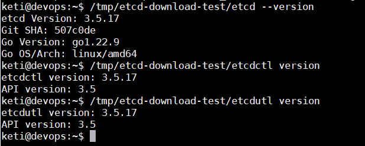

安装 etcd 集群
环境准备
首先介绍一个好用的进程管理工具 goreman，基于它，我们可快速创建、停止本地的多节点etcd集群。
可以通过如下 go install 命令快速安装goreman
go install github.com/mattn/goreman@latest
下载安装文件
然后从 etcd release 页下载etcd v3.5.17二进制文件
ETCD_VER=v3.5.17
# choose either URL
GOOGLE_URL=https://storage.googleapis.com/etcd
GITHUB_URL=https://github.com/etcd-io/etcd/releases/download
DOWNLOAD_URL=${GOOGLE_URL}
rm -f /tmp/etcd-${ETCD_VER}-linux-amd64.tar.gz
rm -rf /tmp/etcd-download-test && mkdir -p /tmp/etcd-download-test
curl -L ${DOWNLOAD_URL}/${ETCD_VER}/etcd-${ETCD_VER}-linux-amd64.tar.gz -o /tmp/etcd-${ETCD_VER}-linux-amd64.tar.gz
tar xzvf /tmp/etcd-${ETCD_VER}-linux-amd64.tar.gz -C /tmp/etcd-download-test --strip-components=1
rm -f /tmp/etcd-${ETCD_VER}-linux-amd64.tar.gz
/tmp/etcd-download-test/etcd --version
/tmp/etcd-download-test/etcdctl version
/tmp/etcd-download-test/etcdutl version

再从 etcd源码 中下载goreman Procfile文件，它描述了etcd进程名、节点数、参数等信息。注意修改etcd为安装路径。
# Use goreman to run `go get github.com/mattn/goreman`
# Change the path of bin/etcd if etcd is located elsewhere
etcd1: /tmp/etcd-download-test/etcd --name infra1 --listen-client-urls http://127.0.0.1:2379 --advertise-client-urls http://127.0.0.1:2379 --listen-peer-urls http://127.0.0.1:12380 --initial-advertise-peer-urls http://127.0.0.1:12380 --initial-cluster-token etcd-cluster-1 --initial-cluster 'infra1=http://127.0.0.1:12380,infra2=http://127.0.0.1:22380,infra3=http://127.0.0.1:32380' --initial-cluster-state new --enable-pprof --logger=zap --log-outputs=stderr
etcd2: /tmp/etcd-download-test/etcd --name infra2 --listen-client-urls http://127.0.0.1:22379 --advertise-client-urls http://127.0.0.1:22379 --listen-peer-urls http://127.0.0.1:22380 --initial-advertise-peer-urls http://127.0.0.1:22380 --initial-cluster-token etcd-cluster-1 --initial-cluster 'infra1=http://127.0.0.1:12380,infra2=http://127.0.0.1:22380,infra3=http://127.0.0.1:32380' --initial-cluster-state new --enable-pprof --logger=zap --log-outputs=stderr
etcd3: /tmp/etcd-download-test/etcd --name infra3 --listen-client-urls http://127.0.0.1:32379 --advertise-client-urls http://127.0.0.1:32379 --listen-peer-urls http://127.0.0.1:32380 --initial-advertise-peer-urls http://127.0.0.1:32380 --initial-cluster-token etcd-cluster-1 --initial-cluster 'infra1=http://127.0.0.1:12380,infra2=http://127.0.0.1:22380,infra3=http://127.0.0.1:32380' --initial-cluster-state new --enable-pprof --logger=zap --log-outputs=stderr
#proxy: bin/etcd grpc-proxy start --endpoints=127.0.0.1:2379,127.0.0.1:22379,127.0.0.1:32379 --listen-addr=127.0.0.1:23790 --advertise-client-url=127.0.0.1:23790 --enable-pprof
# A learner node can be started using Procfile.learner
最后通过 goreman -f Procfile start 命令就可以快速启动一个3节点的本地集群了。
# write,read to etcd
/tmp/etcd-download-test/etcdctl --endpoints=localhost:2379 put foo bar
/tmp/etcd-download-test/etcdctl --endpoints=localhost:2379 get foo
Member list
$ etcdctl member list --write-out=table --endpoints=localhost:12379
$ etcdctl --endpoints=https://11.13.242.28:2379 --cacert=/etc/kubernetes/pki/etcd/ca.pem --cert=/etc/kubernetes/pki/etcd/etcd-client.pem k--key=/etc/kubernetes/pki/etcd/etcd-client-key.pemmember list
5834de0572d30113, started, 11.13.242.28-name-1, https://11.13.242.28:2380, https://11.13.242.28:2379, false
61c86b970867f3a5, started, 11.13.242.29-name-2, https://11.13.242.29:2380, https://11.13.242.29:2379, false
7a7676301fe9f32c, started, 11.13.242.30-name-3, https://11.13.242.30:2380, https://11.13.242.30:2379, false